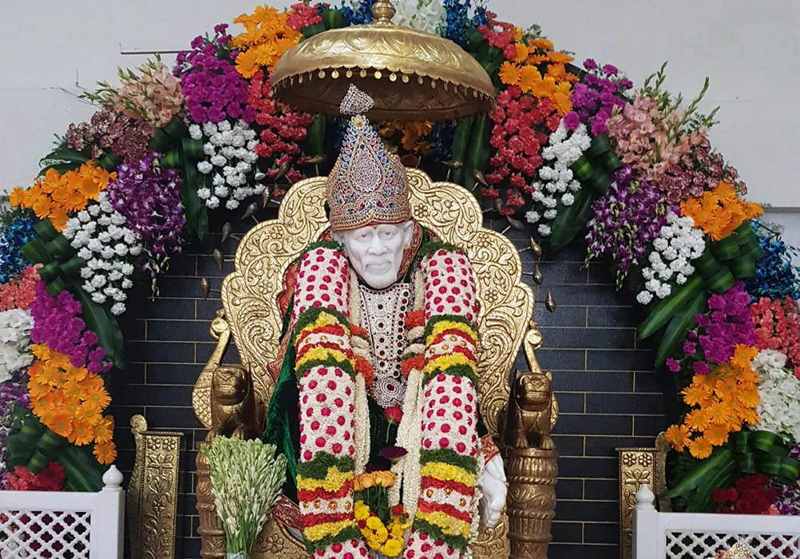

Devotion
Daily aarti, darshan, and personal prayer anchor our rhythm. We encourage sincere, unhurried worship rather than spectacle.
Our temple
A community sanctuary for darshan, aarti, and seva in Green Glen Layout - open to all who come with faith and respect.

Shri Sai Baba Temple stands at 109, Margosa Ave, Green Glen Layout, in Bellandur, Bengaluru, Karnataka 560103 - a neighbourhood known for its lakeside greenery and diverse families from across the city and the IT corridor.
We are a local place of worship where residents, office-goers, students, and visitors pause for morning darshan, Thursday evening aarti, festival gatherings, and the shared meal of Annadanam. The temple is maintained by a managing committee and volunteers who sustain daily pooja, cleanliness, and a welcoming atmosphere for elders and first-time guests alike.
Shirdi Sai Baba (c. 1838–1918) is revered by millions as a saint who transcended narrow boundaries of creed and caste. His teachings emphasise shraddha (faith) and saburi (patience), urging devotees to see the divine in every person and to serve others without pride.
At our temple, Sai Baba is honoured as a guide toward humility, charity, and steady devotion - not as a figure of controversy or unverified legend. We focus on the lived practices devotees cherish: quiet prayer, naam japa, shared meals, and helping neighbours in need. Whether you are new to Sai Baba or have prayed for years, you are welcome to sit, reflect, and offer your respects in your own way, within the temple’s customs.
The managing committee maintains an accurate timeline of Bhoomi Puja, construction milestones, consecration dates, and major community events. That verified history will be published here when confirmed by the committee - we do not present unverified dates or anecdotes on this website.
In the meantime, you are welcome to ask the temple office during your visit for any publicly shared records or commemorative materials the committee has approved for distribution.
What guides us
Daily aarti, darshan, and personal prayer anchor our rhythm. We encourage sincere, unhurried worship rather than spectacle.
Families, neighbours, and volunteers gather here as one Bellandur community - supporting festivals, Annadanam, and temple upkeep together.
Following Sai Baba’s example, we welcome all backgrounds, avoid ostentation, and treat every visitor as a guest of the divine.
Seva - whether through Annadanam, volunteering, or quiet help to elders - is offered as sacred work, not for recognition.

Bellandur’s rapid growth has brought new apartments, schools, and workplaces - and with them, a need for calm, accessible spiritual spaces. Our temple serves as a neighbourhood anchor: a place for Thursday gatherings, festival observances, and Annadanam that nourishes devotees after darshan.
We cooperate with local volunteers for crowd guidance on busy days, support elders with seating near the sanctum when possible, and remain a point of contact for families seeking archane, abhishekam, or festival pooja through the temple office. We do not replace civic services; we complement community life with faith, fellowship, and food shared in Sai Baba’s name.
To preserve a peaceful atmosphere for all devotees, please observe the following when you visit:
For directions, parking notes, and accessibility information, see our visit page.
View daily aarti timings and practical visiting tips, or get directions to Margosa Avenue in Green Glen Layout.